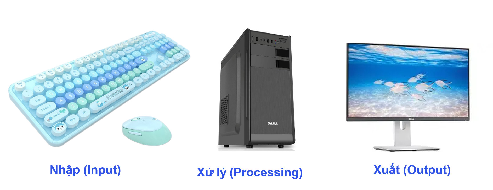

BÀI 1: THÔNG TIN VÀ DỮ LIỆU
1. Khái niệm “Thông tin” và “Dữ liệu”
a. Dữ liệu là gì?
• Dữ liệu (Data) là tập hợp các con số, chữ, hình ảnh, âm thanh,… chưa được xử lý.
• Dữ liệu chưa có ý nghĩa cho đến khi được con người hiểu, phân tích hoặc xử lý.
👉 Ví dụ:
• 100, 28, 5/10,… chỉ là dữ liệu.
• Khi biết “100 là điểm kiểm tra của bạn Lan”, ta có thông tin.
b. Thông tin là gì?
• Thông tin (Information) là dữ liệu đã được xử lý, mang ý nghĩa và giúp con người hiểu, ra quyết định.
• Thông tin có thể thể hiện qua chữ, số, hình ảnh, âm thanh, video…
👉 Ví dụ:
• “Nhiệt độ hôm nay là 28°C” là thông tin, giúp ta biết hôm nay trời nóng.
c. Mối quan hệ giữa dữ liệu và thông tin
| Dữ liệu | Xử lý | Thông tin |
|---|---|---|
| Số liệu, ký hiệu, tín hiệu | → Tính toán, phân tích, so sánh | → Kết quả có ý nghĩa, giúp ra quyết định |
👉 Kết luận:
Dữ liệu là “nguyên liệu thô”, thông tin là “sản phẩm” sau khi xử lý dữ liệu.
2. Đơn vị đo lượng thông tin
• Máy tính lưu trữ thông tin dưới dạng bit (binary digit – 0 hoặc 1).
• Các đơn vị lớn hơn:
| Đơn vị | Ký hiệu | Giá trị tương đương |
|---|---|---|
| Bit | b | 0 hoặc 1 |
| Byte | B | 8 bit |
| Kilobyte | KB | 1024 B |
| Megabyte | MB | 1024 KB |
| Gigabyte | GB | 1024 MB |
| Terabyte | TB | 1024 GB |
👉 Ví dụ:
• Ảnh chụp = vài MB.
• Phim HD = vài GB.
• Ổ cứng = hàng trăm GB hoặc TB.
3. Biểu diễn và xử lý thông tin bằng máy tính
a. Máy tính chỉ hiểu dữ liệu số (0 và 1)
• Mọi loại thông tin (chữ, ảnh, âm thanh, video) đều phải mã hóa thành dãy bit để máy tính hiểu và xử lý.
👉 Ví dụ:
• Ký tự “A” có mã ASCII là 01000001.
• Ảnh → hàng triệu điểm ảnh (pixel), mỗi pixel có mã màu (dạng số).
b. Quá trình xử lý thông tin trong máy tính
1. Nhập (Input) → qua bàn phím, chuột, camera,...
2. Xử lý (Processing) → CPU tính toán, xử lý dữ liệu.
3. Xuất (Output) → hiển thị ra màn hình, in, loa,...

👉 Kết luận:
Máy tính giúp xử lý lượng dữ liệu khổng lồ nhanh chóng, chính xác → tạo thông tin hữu ích cho học tập và đời sống.
🧩 Tóm tắt ghi nhớ
| Nội dung | Ý chính |
|---|---|
| Dữ liệu | Nguyên liệu thô, chưa có ý nghĩa |
| Thông tin | Dữ liệu đã xử lý, có ý nghĩa |
| Quan hệ | Dữ liệu → Xử lý → Thông tin |
| Đơn vị | Bit, Byte, KB, MB, GB, TB |
| Máy tính | Xử lý – lưu trữ – truyền thông tin bằng dãy bit |